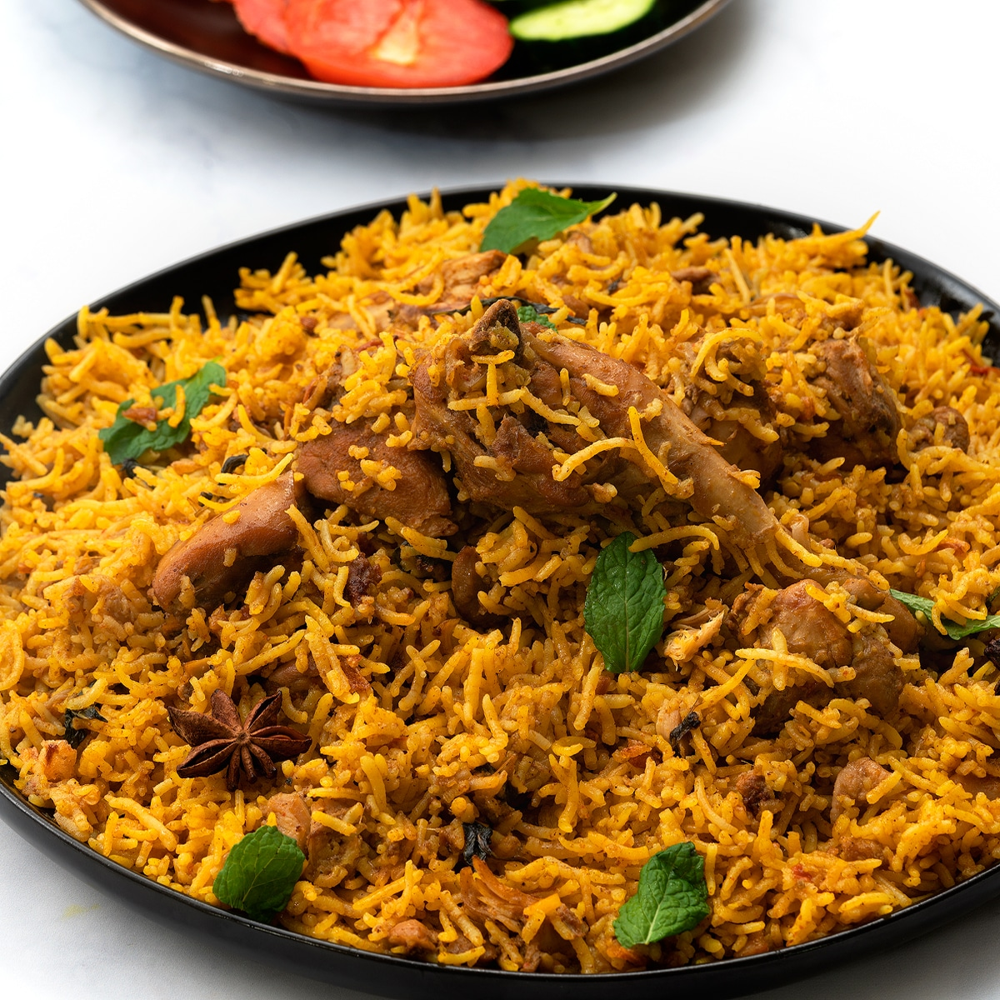

Biriyani Recipe

Description
Biryani is a celebrated, aromatic rice dish made by layering perfectly cooked
long-grain basmati rice
with spiced, tender meat or vegetables. The dish is infused with luxurious flavourings like
saffron, ghee, fried onions, and fresh mint, then slow-cooked under steam using the traditional
dum
method. This slow-cooking process allows the rice to absorb the rich juices of the meat, resulting in
a complex, festive meal where every grain of rice is separate and packed with flavour.
The dish originated in Persia and was brought to the Indian subcontinent by Muslim travelers,
merchants, and conquerors, where it was highly refined in the royal Mughal kitchens. Local chefs
adapted the dish across different regions, creating iconic variations like the spicy Hyderabadi style
and the fragrant, potato-infused Kolkata style. Today, it stands as a pinnacle of South Asian
celebratory cuisine and a beloved global culinary staple.
Ingredients
- 2 tablespoons ghee
- 1 cup plain yogurt
- 1 tablespoon lemon juice
- 2 large onions, thinly sliced
- 2 medium tomatoes, chopped
- 3 small green chile peppers, slit
- 1 tablespoon ginger-garlic paste
- 1 tablespoon Kashmiri red chilli powder
- 1 tablespoon biryani masala
- ½ cup fresh mint leaves, chopped
- ½ cup fresh coriander leaves, chopped
- 2 pounds chicken, cut into pieces
- 3 quarts water
- 3 cups uncooked basmati rice
- 1 cinnamon stick
- 1 bay leaf, 4 pods green cardamom, 1 pod black cardamom
- 2 tablespoons saffron milk, salt to taste
Steps
- Mix yogurt, lemon juice, chilli powder, biryani masala, and salt in a bowl. Add chicken pieces and
coat well; set aside to marinate for 30 minutes.
- Heat ghee in a large pot over medium heat. Add onions; cook and stir until deep golden brown. Set
half the onions aside. Add ginger-garlic paste, tomatoes, and chile peppers to the pot; cook until tomatoes
are soft.
- Stir the marinated chicken, half the mint, and half the coriander into the pot. Cover and cook on medium-low
heat for 20 minutes until the chicken is tender and the gravy is thick.
- Meanwhile, bring water, rice, cinnamon stick, bay leaf, green cardamom, black cardamom, and salt to a boil
in a separate large pot. Cook until the rice is 70% cooked (about 7 minutes); drain completely and discard
the whole spices.
- Layer the cooked rice directly over the chicken mixture in the pot. Top with the reserved fried onions,
remaining mint, remaining coriander, and drizzle with saffron milk. Cover tightly and simmer on lowest heat
for 15 minutes to steam.
And there you have a bowl of aromatic biriyani!
< Previous Recipe
Next Recipe >
Return to Home